Chapter 6 Correlation and regression
Linear regression is a very powerful statistical technique. Many people have some familiarity with regression just from reading the news, where straight lines are overlaid on scatterplots. Linear models can be used for prediction or to evaluate whether there is a linear relationship between two numerical variables.
6.1 Fitting a line, residuals, and correlation
It’s helpful to think deeply about the line fitting process. In this section, we define the form of a linear model, explore criteria for what makes a good fit, and introduce a new statistic called correlation.
6.1.1 Fitting a line to data
Figure 6.1 shows two variables whose relationship can be modeled perfectly with a straight line. The equation for the line is \(y = 5 + 64.96 x\). Consider what a perfect linear relationship means: we know the exact value of \(y\) just by knowing the value of \(x\). This is unrealistic in almost any natural process. For example, if we took family income (\(x\)), this value would provide some useful information about how much financial support a college may offer a prospective student (\(y\)). However, the prediction would be far from perfect, since other factors play a role in financial support beyond a family’s finances.
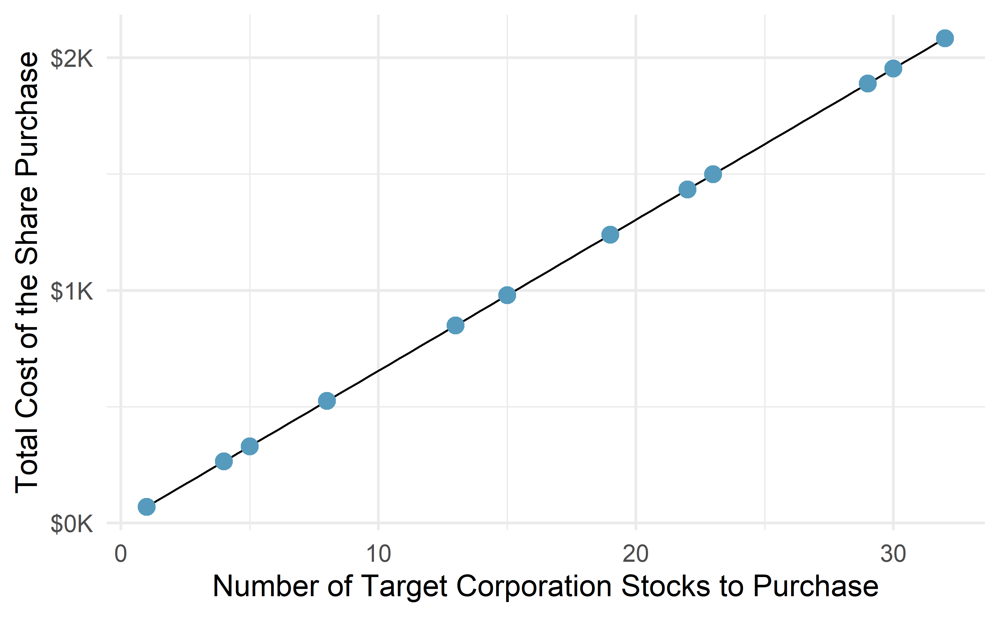
Figure 6.1: Requests from twelve separate buyers were simultaneously placed with a trading company to purchase Target Corporation stock (ticker TGT, December 28th, 2018), and the total cost of the shares were reported. Because the cost is computed using a linear formula, the linear fit is perfect.
Linear regression is the statistical method for fitting a line to data where the relationship between two variables, \(x\) and \(y\), can be modeled by a straight line with some error:
\[ y = \beta_0 + \beta_1x + \varepsilon\]
The values \(\beta_0\) and \(\beta_1\) represent the model’s parameters (\(\beta\) is the Greek letter beta), and the error is represented by \(\varepsilon\) (the Greek letter epsilon). The parameters are estimated using data, and we write their point estimates as \(b_0\) and \(b_1\). When we use \(x\) to predict \(y\), we usually call \(x\) the explanatory or predictor variable, and we call \(y\) the response. We also often drop the \(\epsilon\) term when writing down the model since our main focus is often on the prediction of the average outcome. If the \(\epsilon\) term is dropped, then we put a “hat” on \(y\) (\(\hat{y}\)) to signal that the model yields a prediction for \(y\), and not the actual value.
It is rare for all of the data to fall perfectly on a straight line. Instead, it’s more common for data to appear as a cloud of points, such as those examples shown in Figure 6.2. In each case, the data fall around a straight line, even if none of the observations fall exactly on the line. The first plot shows a relatively strong downward linear trend, where the remaining variability in the data around the line is minor relative to the strength of the relationship between \(x\) and \(y\). The second plot shows an upward trend that, while evident, is not as strong as the first. The last plot shows a very weak downward trend in the data, so slight we can hardly notice it. In each of these examples, we will have some uncertainty regarding our estimates of the model parameters, \(\beta_0\) and \(\beta_1\). For instance, we might wonder, should we move the line up or down a little, or should we tilt it more or less? As we move forward in this chapter, we will learn about criteria for line-fitting, and we will also learn about the uncertainty associated with estimates of model parameters.
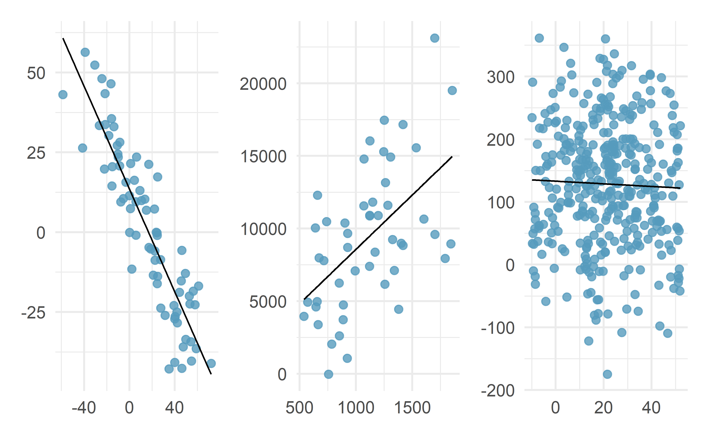
Figure 6.2: Three data sets where a linear model may be useful even though the data do not all fall exactly on the line.
There are also cases where fitting a straight line to the data, even if there is a clear relationship between the variables, is not helpful. One such case is shown in Figure 6.3 where there is a very clear relationship between the variables even though the trend is not linear. We discuss nonlinear trends in this chapter and the next, but details of fitting nonlinear models are saved for a later course.
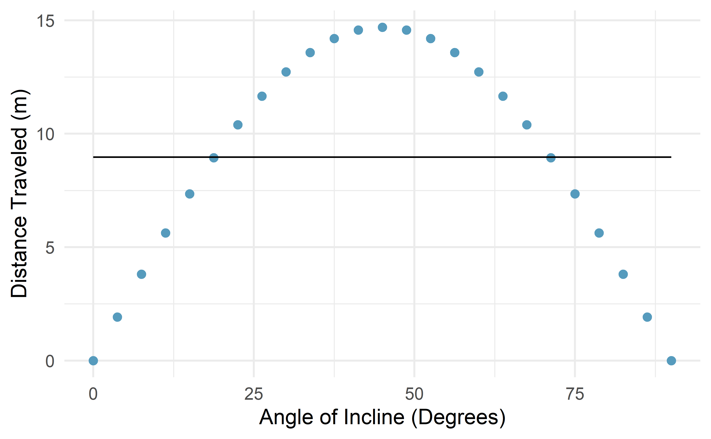
Figure 6.3: The best fitting line for these data is flat, which is not useful in this nonlinear case. These data are from a physics experiment.
6.1.2 Using linear regression to predict possum head lengths
Brushtail possums are a marsupial that lives in Australia, and a photo of one is shown in Figure 6.4. Researchers captured 104 of these animals and took body measurements before releasing the animals back into the wild. We consider two of these measurements: the total length of each possum, from head to tail, and the length of each possum’s head.
, CC BY 2.0 license.](03/figures/brushtail-possum/brushtail-possum.jpg)
Figure 6.4: The common brushtail possum of Australia. Photo by Greg Schecter, flic.kr/p/9BAFbR, CC BY 2.0 license.
Figure 6.5 shows a scatterplot for the head length (mm) and total length (cm) of the possums. Each point represents a single possum from the data. The head and total length variables are associated: possums with an above average total length also tend to have above average head lengths. While the relationship is not perfectly linear, it could be helpful to partially explain the connection between these variables with a straight line.
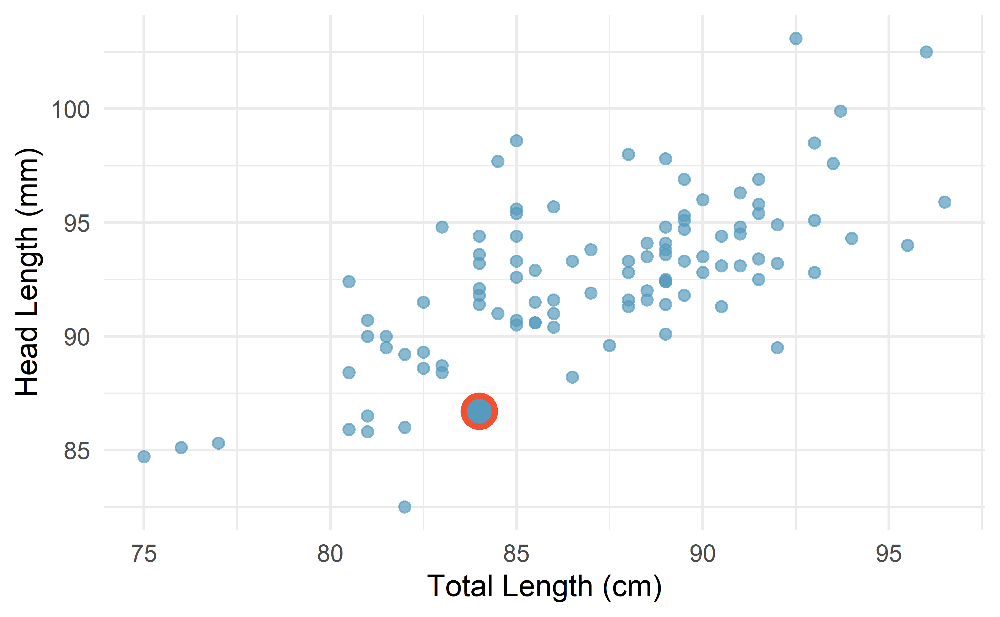
Figure 6.5: A scatterplot showing head length against total length for 104 brushtail possums. A point representing a possum with head length 86.7 mm and total length 84 cm is highlighted.
We want to describe the relationship between the head length and total length variables in the possum data set using a line. In this example, we will use the total length as the predictor variable, \(x\), to predict a possum’s head length, \(y\). We could fit the linear relationship using technology (criteria to be discussed in Section 6.2), as in Figure 6.6.
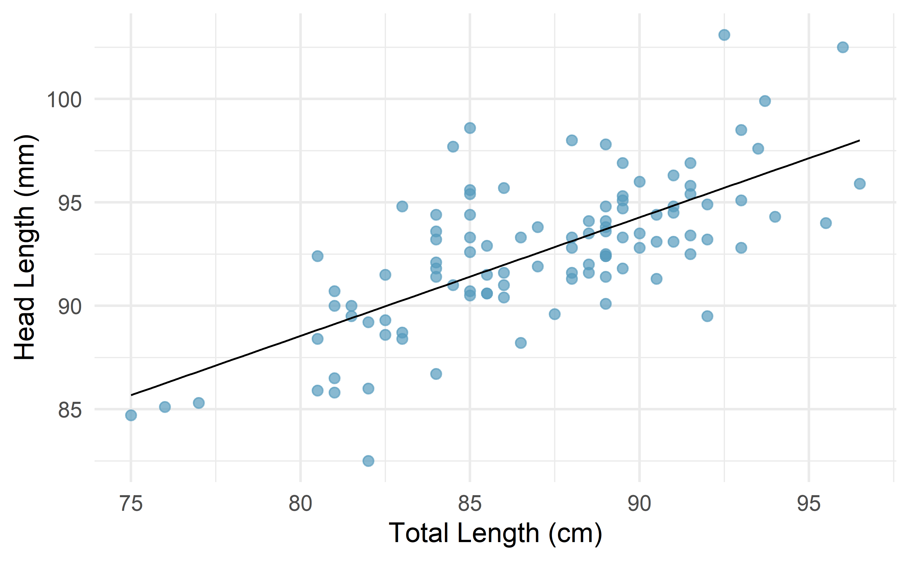
Figure 6.6: A reasonable linear model was fit to represent the relationship between head length and total length.
The equation for this line is
\[\hat{y} = 43+0.57x.\]
A “hat” on \(y\) is used to signify that this is an estimate. We can use this line to discuss properties of possums. For instance, the equation predicts a possum with a total length of 80 cm will have a head length of
\[\hat{y} = 43 + 0.57 \times 80 = 88.6 \text{ mm}.\]
The estimate may be viewed as an average: the equation predicts that possums with a total length of 80 cm will have an average head length of 88.6 mm. Absent further information about an 80 cm possum, the prediction for head length that uses the average is a reasonable estimate.
There may be other variables that could help us predict the head length of a possum besides its length. Perhaps the relationship would be a little different for male possums than female possums, or perhaps it would differ for possums from one region of Australia versus another region. Plot A in Figure 6.7 shows the relationship between total length and head length of brushtail possums, taking into consideration their sex. Male possums (represented by blue triangles) seem to be larger in terms of total length and head length than female possums (represented by red circles). Plot B in Figure 6.7 shows the same relationship, taking into consideration their age. It’s harder to tell if age changes the relationship between total length and head length for these possums.
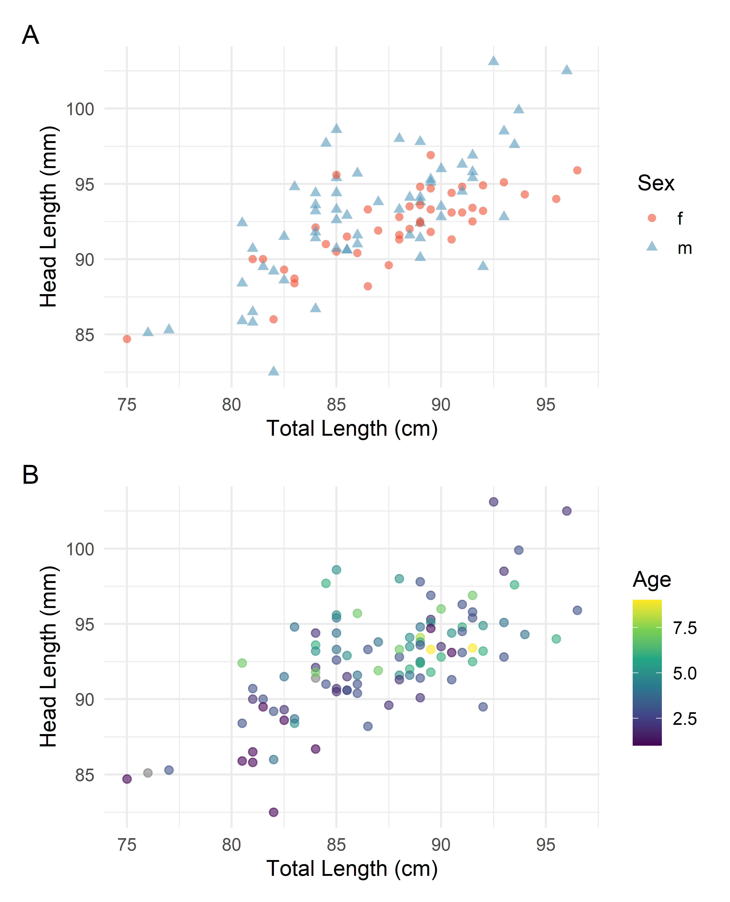
Figure 6.7: Relationship between total length and head lentgh of brushtail possums, taking into consideration their sex (Plot A) or age (Plot B).
In Chapter 7, we’ll learn about how we can include more than one predictor in our model. Before we get there, we first need to better understand how to best build a simple linear model with one predictor.
6.1.3 Residuals
Residuals are the leftover variation in the data after accounting for the model fit:
\[\text{Data} = \text{Fit} + \text{Residual}\]
Each observation will have a residual, and three of the residuals for the linear model we fit for the data are shown in Figure 6.8. If an observation is above the regression line, then its residual, the vertical distance from the observation to the line, is positive. Observations below the line have negative residuals. One goal in picking the right linear model is for these residuals to be as small as possible.
Figure 6.8 is almost a replica of Figure 6.6, with three points from the data highlighted. The observation marked by a red circle has a small, negative residual of about -1; the observation marked by a green diamond has a large residual of about +7; and the observation marked by a yellow triangle has a moderate residual of about -4. The size of a residual is usually discussed in terms of its absolute value. For example, the residual for the observation marked by a yellow triangle is larger than that of the observation marked by a red circle because \(|-4|\) is larger than \(|-1|\).
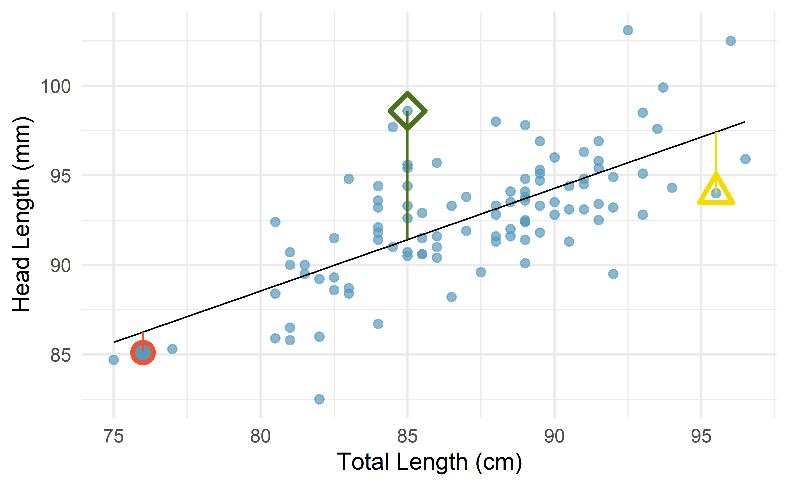
Figure 6.8: A reasonable linear model was fit to represent the relationship between head length and total length, with three points and their residuals highlighted.
Residual: Difference between observed and predicted.
The residual of the \(i^{th}\) observation \((x_i, y_i)\) is the difference of the observed response (\(y_i\)) and the response we would predict based on the model fit (\(\hat{y}_i\)):
\[e_i = y_i - \hat{y}_i\]
We typically identify \(\hat{y}_i\) by plugging \(x_i\) into the model.
The linear fit shown in Figure 6.8 is given as \(\hat{y} = 43+0.57x\). Based on this line, formally compute the residual of the observation \((76.0, 85.1)\). This observation is marked by a red circle in Figure 6.8. Check it against the earlier visual estimate, \(-1\).
We first compute the predicted value of the observation marked by a red circle based on the model:
\[\hat{y} = 43+0.57x = 43+0.57\times 76.0 = 86.3mm\]
Next, we compute the difference of the actual head length and the predicted head length:
\[e = y - \hat{y} = 85.1 - 86.3 = -1.2 mm\]
The model’s error is \(e = -1.2\) mm, which is very close to the visual estimate of \(-1\) mm. The negative residual indicates that the linear model overpredicted head length for this particular possum.
If a model underestimates an observation, will the residual be positive or negative? What about if it overestimates the observation?55
Compute the residuals for the observation marked by a green diamond, \((85.0, 98.6)\), and the observation marked by a yellow triangle, \((95.5, 94.0)\), in the figure using the linear relationship \(\hat{y} = 43 + 0.57x\).56
Residuals are helpful in evaluating how well a linear model fits a data set. We often display them in a residual plot such as the one shown in Figure 6.9 for the regression line in Figure 6.8. The residuals are plotted at their fitted values on the \(x\)-axis but with the vertical coordinate as the residual. For instance, the point \((85.0, 98.6)\) (marked by the green diamond) had a predicted value of 91.45 mm and had a residual of 7.15 mm, so in the residual plot it is placed at \((91.45, 7.15)\). Creating a residual plot is sort of like tipping the scatterplot over so the regression line is horizontal.
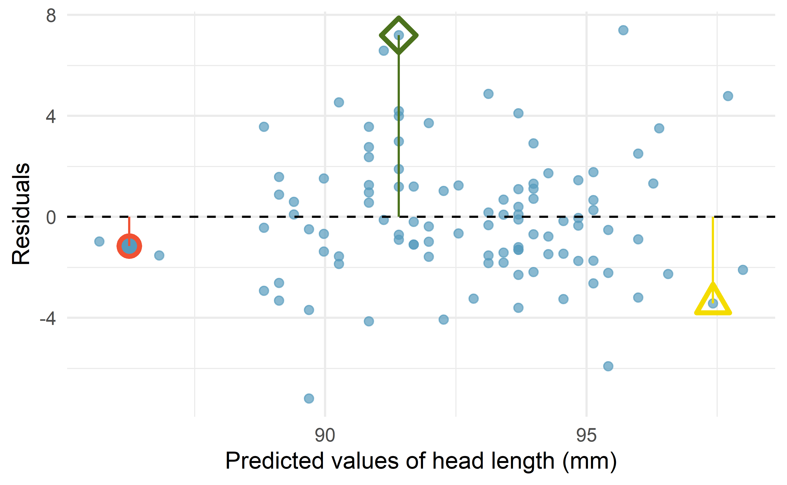
Figure 6.9: Residual plot for the model predicting head length from total length for brushtail possums.
One purpose of residual plots is to identify characteristics or patterns still apparent in data after fitting a model. Figure 6.10 shows three scatterplots with linear models in the first row and residual plots in the second row. Can you identify any patterns remaining in the residuals?
In the first data set (first column), the residuals show no obvious patterns. The residuals appear to be scattered randomly around the dashed line that represents 0.
The second data set shows a pattern in the residuals. There is some curvature in the scatterplot, which is more obvious in the residual plot. We should not use a straight line to model these data. Instead, a more advanced technique should be used.
The last plot shows very little upwards trend, and the residuals also show no obvious patterns. It is reasonable to try to fit a linear model to the data. However, it is unclear whether the slope parameter is statistically discernible from zero. The point estimate of the slope parameter, labeled \(b_1\), is not zero, but we might wonder if this could just be due to chance. We will address this sort of scenario in Chapter 21.
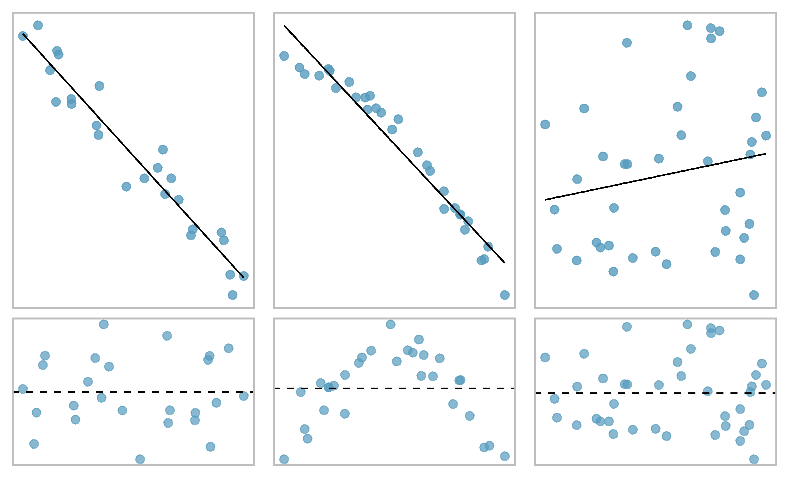
Figure 6.10: Sample data with their best fitting lines (top row) and their corresponding residual plots (bottom row).
6.1.4 Describing linear relationships with correlation
We’ve seen plots with strong linear relationships and others with very weak linear relationships. It would be useful if we could quantify the strength of these linear relationships with a statistic.
Correlation: strength and direction of a linear relationship.
Correlation which always takes values between -1 and 1, is a summary statistic that describes the strength (by its magnitude) and direction (by its sign) of the linear relationship between two variables. We denote the correlation by \(r\) or \(R\).
We can compute the correlation using a formula, just as we did with the sample mean and standard deviation. This formula is rather complex57, and like with other statistics, we generally perform the calculations on a computer or calculator. Figure 6.11 shows eight plots and their corresponding correlations. Only when the relationship is perfectly linear is the correlation either -1 or 1. If the relationship is strong and positive, the correlation will be near +1. If it is strong and negative, it will be near -1. If there is no apparent linear relationship between the variables, then the correlation will be near zero.
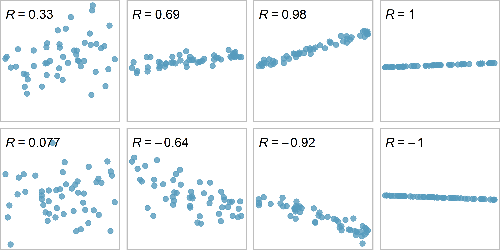
Figure 6.11: Sample scatterplots and their correlations. The first row shows variables with a positive relationshiop, represented by the trend up and to the right. The second row shows variables with a negative trend, where a large value in one variable is associated with a low value in the other.
The correlation is intended to quantify the strength and direction of a linear trend. Nonlinear trends, even when strong, sometimes produce correlations that do not reflect the strength of the relationship; see three such examples in Figure 6.12.
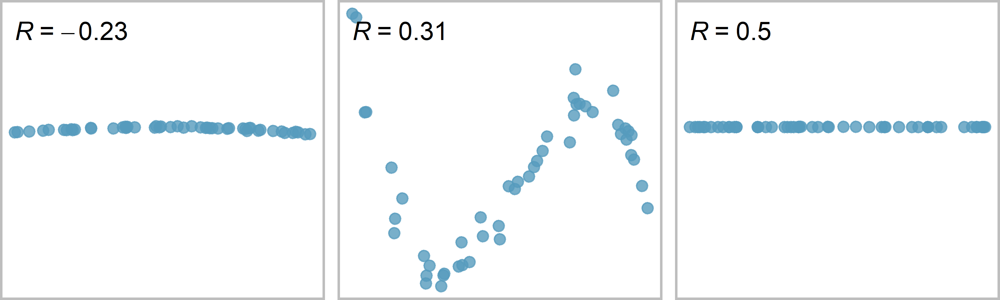
Figure 6.12: Sample scatterplots and their correlations. In each case, there is a strong relationship between the variables, However, because the relationship is nonlinear, the correlation is relatively weak.
6.2 Least squares regression
Fitting linear models by eye is open to criticism since it is based on an individual’s preference. In this section, we use least squares regression as a more rigorous approach.
6.2.1 Gift aid for freshman at Elmhurst College
This section considers family income and gift aid data from a random sample of fifty students in the freshman class of Elmhurst College in Illinois. Gift aid is financial aid that does not need to be paid back, as opposed to a loan.
A scatterplot of the data is shown in Figure 6.13 along with two linear fits. The lines follow a negative trend in the data; students who have higher family incomes tended to have lower gift aid from the university.
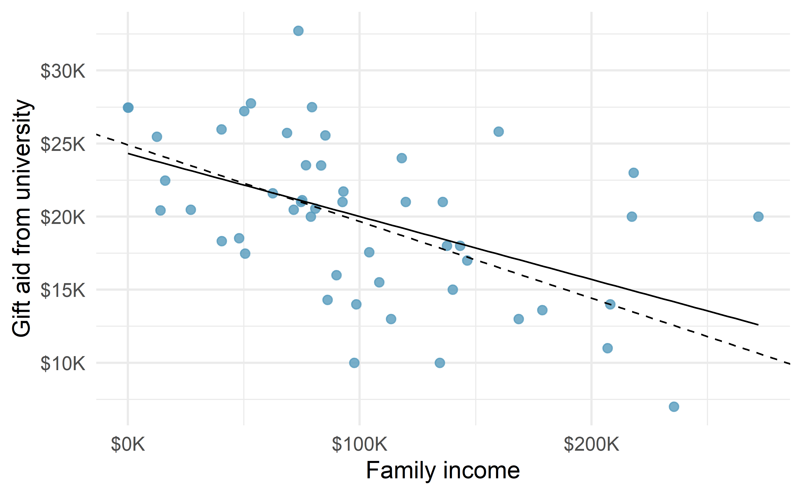
Figure 6.13: Gift aid and family income for a random sample of 50 freshman students from Elmhurst College, shown with the least squares line (solid line) and line fit by minimizing the sum of the residual magnitudes (dashed line).
6.2.2 An objective measure for finding the best line
We begin by thinking about what we mean by “best”. Mathematically, we want a line that has small residuals. The first option that may come to mind is to minimize the sum of the residual magnitudes:
\[|e_1| + |e_2| + \dots + |e_n|\]
which we could accomplish with a computer program. The resulting dashed line shown in Figure 6.13 demonstrates this fit can be quite reasonable. However, a more common practice is to choose the line that minimizes the sum of the squared residuals:
\[e_{1}^2 + e_{2}^2 + \dots + e_{n}^2\]
The line that minimizes this least squares criterion is represented as the solid line in Figure 6.13. This is commonly called the least squares line. The following are three possible reasons to choose this option instead of trying to minimize the sum of residual magnitudes without any squaring:
- It is the most commonly used method.
- Computing the least squares line is widely supported in statistical software.
- In many applications, a residual twice as large as another residual is more than twice as bad. For example, being off by 4 is usually more than twice as bad as being off by 2. Squaring the residuals accounts for this discrepancy.
The first two reasons are largely for tradition and convenience; the last reason explains why the least squares criterion is typically most helpful.60
6.2.3 Finding and interpreting the least squares line
For the Elmhurst data, we could write the equation of our linear regression model as \[aid = \beta_0 + \beta_{1}\times \textit{family_income} + \epsilon.\] Here the model equation is set up to predict gift aid based on a student’s family income, which would be useful to students considering Elmhurst. The two unknown values \(\beta_0\) and \(\beta_1\) are the parameters of the linear regression model, and \(\epsilon\) represents the random error.
The least squares regression line, computed based on the observed data, provides estimates of the parameters \(\beta_0\) and \(\beta_1\): \[\widehat{aid} = b_0 + b_{1}\times \textit{family_income}.\] In practice, this estimation is done using a computer in the same way that other estimates, like a sample mean, can be estimated using a computer or calculator.
The dataset where these data are stored is called elmhurst in the openintro package. Run the code below to load the data set into your RStudio session.
The first five rows of this dataset are given in Table 6.1.
| family_income | gift_aid | price_paid |
|---|---|---|
| 92.92 | 21.7 | 14.28 |
| 0.25 | 27.5 | 8.53 |
| 53.09 | 27.8 | 14.25 |
| 50.20 | 27.2 | 8.78 |
| 137.61 | 18.0 | 24.00 |
We can see that family income is recorded in a variable called family_income and gift aid from university is recorded in a variable called gift_aid.
For now, we won’t worry about the price_paid variable.
We should also note that these data are from the 2011-2012 academic year, and all monetary amounts are given in $1,000s, i.e., the family income of the first student in the data shown in Table 6.1 is $92,900 and they received a gift aid of $21,700. (The data source states that all numbers have been rounded to the nearest whole dollar.)
Using these data, we can estimate the linear regression line by fitting a linear model to the data with the lm() function in R.
lm(gift_aid ~ family_income, data = elmhurst)
#>
#> Call:
#> lm(formula = gift_aid ~ family_income, data = elmhurst)
#>
#> Coefficients:
#> (Intercept) family_income
#> 24.3193 -0.0431The model output tells us that the intercept is approximately 24.319 and the slope is approximately -0.043.
But what do these values mean? Interpreting parameters in a regression model is often one of the most important steps in the analysis.
The intercept and slope estimates for the Elmhurst data are \(b_0\) = 24.319 and \(b_1\) = -0.043. What do these numbers really mean?
Interpreting the estimated slope is helpful in almost any application. For each additional $1,000 of family income, we would predict a student to receive a net difference of 1,000 \(\times\) (-0.0431) = -$43.10 in aid on average, i.e., $43.10 less. Note that a higher family income corresponds to less aid because the coefficient of family income is negative in the model. We must be cautious in this interpretation: while there is a real association, we cannot interpret a causal connection between the variables because these data are observational. That is, increasing a student’s family income may not cause the student’s aid to drop. (It would be reasonable to contact the college and ask if the relationship is causal, i.e., if Elmhurst College’s aid decisions are partially based on students’ family income.) A more appropriate interpretation would then be: An additional $1,000 of family income is associated with an estimated decrease of $43.10 in aid on average.
The estimated intercept \(b_0\) = 24.319 describes the average aid if a student’s family had no income. The meaning of the intercept is relevant to this application since the family income for some students at Elmhurst is $0. In other applications, the intercept may have little or no practical value if there are no observations where \(x\) is near zero.
Interpreting parameters estimated by least squares.
The slope describes the estimated difference in the \(y\) variable if the explanatory variable \(x\) for a case happened to be one unit larger.
The intercept describes the average outcome of \(y\) if \(x=0\) and the linear model is valid all the way to \(x=0\), which in many applications is not the case.
Suppose a high school senior is considering Elmhurst College. Can they simply use the linear equation that we have estimated to calculate her financial aid from the university?
She may use it as an estimate, though some qualifiers on this approach are important. First, the data all come from one freshman class, and the way aid is determined by the university may change from year to year. Second, the equation will provide an imperfect estimate. While the linear equation is good at capturing the trend in the data, no individual student’s aid will be perfectly predicted.
Statistical software is usually used to compute the least squares line and the typical output generated as a result of fitting regression models looks like the one shown in Table 6.3. For now we will focus on the first column of the output, which lists \({b}_0\) and \({b}_1\). In Chapter 21 we will dive deeper into the remaining columns which give us information on how accurate and precise these values of intercept and slope that are calculated from a sample of 50 students are in estimating the population parameters of intercept and slope for all students.
| term | estimate | std.error | statistic | p.value |
|---|---|---|---|---|
| (Intercept) | 24.319 | 1.291 | 18.83 | 0 |
| family_income | -0.043 | 0.011 | -3.98 | 0 |
6.2.4 Calculating the least squares regression line using summary statistics (special topic)
An alternative way of calculating the values of intercept and slope of a least squares line is manual calculations using formulas. While this method is not commonly used by practicing statisticians and data scientists, it is useful to work through the first time you’re learning about the least squares line and modeling in general. Calculating these values by hand leverages two properties of the least squares line:
- The slope of the least squares line can be estimated by
\[b_1 = \frac{s_y}{s_x} r \]
where \(r\) is the correlation between the two variables, and \(s_x\) and \(s_y\) are the sample standard deviations of the explanatory variable and response, respectively.
- If \(\bar{x}\) is the sample mean of the explanatory variable and \(\bar{y}\) is the sample mean of the vertical variable, then the point \((\bar{x}, \bar{y})\) is on the least squares line.
Table 6.5 shows the sample means for the family income and gift aid as $101,780 and $19,940, respectively. We could plot the point \((102, 19.9)\) on Figure 6.13 to verify it falls on the least squares line (the solid line).
| mean | sd | mean | sd | R |
|---|---|---|---|---|
| 102 | 63.2 | 19.9 | 5.46 | -0.499 |
Next, we formally find the point estimates \(b_0\) and \(b_1\) of the parameters \(\beta_0\) and \(\beta_1\).
Using the summary statistics in Table 6.5, compute the slope for the regression line of gift aid against family income.
Compute the slope using the summary statistics from Table 6.5:
\[b_1 = \frac{s_y}{s_x} r = \frac{5.46}{63.2}(-0.499) = -0.0431\]
You might recall the form of a line from math class, which we can use to find the model fit, including the estimate of \(b_0\). Given the slope of a line and a point on the line, \((x_0, y_0)\), the equation for the line can be written as
\[y - y_0 = slope\times (x - x_0)\]
Identifying the least squares line from summary statistics.
To identify the least squares line from summary statistics:
- Estimate the slope parameter, \(b_1 = (s_y / s_x) R\).
- Noting that the point \((\bar{x}, \bar{y})\) is on the least squares line, use \(x_0 = \bar{x}\) and \(y_0 = \bar{y}\) with the point-slope equation: \(y - \bar{y} = b_1 (x - \bar{x})\).
- Simplify the equation, which would reveal that \(b_0 = \bar{y} - b_1 \bar{x}\).
Using the point (102, 19.9) from the sample means and the slope estimate \(b_1 = -0.0431\), find the least-squares line for predicting aid based on family income.
Apply the point-slope equation using \((102, 19.9)\) and the slope \(b_1 = -0.0431\):
\[\begin{aligned} y - y_0 &= b_1 (x - x_0) \\ y - 19.9 &= -0.0431(x - 102) \end{aligned}\]
Expanding the right side and then adding 19.9 to each side, the equation simplifies:
\[\begin{aligned} \widehat{aid} = 24.3 - 0.0431 \times \textit{family_income} \end{aligned}\]
Here we have replaced \(y\) with \(\widehat{aid}\) and \(x\) with family_income to put the equation in context. The final equation should always include a “hat” on the variable being predicted, whether it is a generic “\(y\)” or a named variable like “\(aid\)”.
6.2.5 Extrapolation is treacherous
When those blizzards hit the East Coast this winter, it proved to my satisfaction that global warming was a fraud. That snow was freezing cold. But in an alarming trend, temperatures this spring have risen. Consider this: On February \(6^{th}\) it was 10 degrees. Today it hit almost 80. At this rate, by August it will be 220 degrees. So clearly folks the climate debate rages on.61
Stephen Colbert
April 6th, 2010
Linear models can be used to approximate the relationship between two variables. However, these models have real limitations. Linear regression is simply a modeling framework. The truth is almost always much more complex than our simple line. For example, we do not know how the data outside of our limited window will behave.
Use the model \(\widehat{aid} = 24.3 - 0.0431 \times \textit{family_income}\) to estimate the aid of another freshman student whose family had income of $1 million.
We want to calculate the aid for a family with $1 million income. Note that in our model, this will be represented as 1,000 since the data are in $1,000s.
\[24.3 - 0.0431 \times 1000 = -18.8 \]
The model predicts this student will have -$18,800 in aid (!). However, Elmhurst College does not offer negative aid where they select some students to pay extra on top of tuition to attend.
Applying a model estimate to values outside of the realm of the original data is called extrapolation. Generally, a linear model is only an approximation of the real relationship between two variables. If we extrapolate, we are making an unreliable bet that the approximate linear relationship will be valid in places where it has not been analyzed.
6.2.6 Describing the strength of a fit
We evaluated the strength of the linear relationship between two variables earlier using the correlation, \(r\). However, it is more common to explain the strength of a linear fit using \(r^2\), called r-squared. If provided with a linear model, we might like to describe how closely the data cluster around the linear fit.
The \(r^2\) of a linear model describes the amount of variation in the response that is explained by the least squares line. For example, consider the Elmhurst data, shown in Figure 6.13. The variance of the response variable, aid received, is about \(s_{aid}^2 \approx 29.8\) million. However, if we apply our least squares line, then this model reduces our uncertainty in predicting aid using a student’s family income. The variability in the residuals describes how much variation remains after using the model: \(s_{_{RES}}^2 \approx 22.4\) million. In short, there was a reduction of \[\frac{s_{aid}^2 - s_{_{RES}}^2}{s_{aid}^2} = \frac{29800 - 22400}{29800} = \frac{7500}{29800} \approx 0.25\] or about 25% in the data’s variation by using information about family income for predicting aid using a linear model. This corresponds exactly to the r-squared value:
\[r = -0.499 \rightarrow r^2 = 0.25\] The squared correlation coefficient, \(r^2\) (or \(R^2\)), is also called the coefficient of determination.
Coefficient of determination: proportion of variability in the response explained by the model.
Since \(r\) is always between \(-1\) and \(1\), \(r^2\) will always be between \(0\) and \(1\). This statistic is called the coefficient of determination and measures the proportion of variation in the response variable, \(y\), that can be explained by the linear model with predictor \(x\).
Examine the scatterplot of head length (mm) versus total length (cm) of possums in Figure 6.6. The correlation between these two variables is \(R = 0.69\). Find and interpret the coefficient of determination.
To find \(r^2\), we square the correlation: \(r^2 = (0.69)^2 = 0.48\). This tells us that about 48% of variation in possum head length can be explained by total length. This is visualized in Figure 6.14.
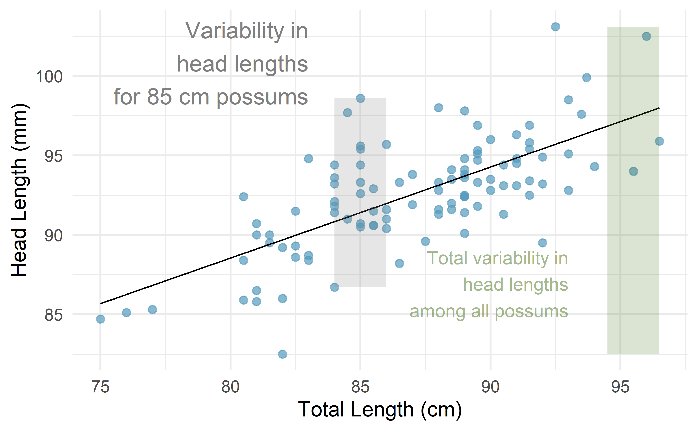
Figure 6.14: For these 104 possums, the range of head lengths is about 103 \(-\) 83 = 20 mm. However, among possums of the same total length (e.g., 85 cm), the range in head lengths is reduced to about 10 mm, or about a 50% reduction, which matches \(r^2 = 0.48\), or 48%.
If a linear model has a very strong negative relationship with a correlation of -0.97, how much of the variation in the response is explained by the explanatory variable?62
More generally, \(r^2\) can be calculated as a ratio of a measure of variability around the line divided by a measure of total variability.
Sums of squares to measure variability in \(y\).
We can measure the variability in the \(y\) values by how far they tend to fall from their mean, \(\bar{y}\). We define this value as the total sum of squares,
\[ SST = (y_1 - \bar{y})^2 + (y_2 - \bar{y})^2 + \cdots + (y_n - \bar{y})^2. \]
Left-over variability in the \(y\) values if we know \(x\) can be measured by the sum of squared errors, or sum of squared residuals63,
\[ SSE = (y_1 - \hat{y}_1)^2 + (y_2 - \hat{y}_2)^2 + \cdots + (y_n - \hat{y}_n)^2 = e_{1}^2 + e_{2}^2 + \dots + e_{n}^2 \]
The coefficient of determination can then be calculated as
\[ r^2 = \frac{SST - SSE}{SST} = 1 - \frac{SSE}{SST} \]
Among 104 possums, the total variability in head length (mm) is \(SST = 1315.2\)64. The sum of squared residuals is \(SSE = 687.0\). Find \(r^2\).
Since we know \(SSE\) and \(SST\), we can calculate \(r^2\) as
\[ r^2 = 1 - \frac{SSE}{SST} = 1 - \frac{687.0}{1315.2} = 0.48, \] the same value we found when we squared the correlation: \(r^2 = (0.69)^2 = 0.48\).
6.2.7 Categorical predictors with two levels (special topic)
Categorical variables are also useful in predicting outcomes.
Here we consider a categorical predictor with two levels (recall that a level is the same as a category).
We’ll consider Ebay auctions for a video game, Mario Kart for the Nintendo Wii, where both the total price of the auction and the condition of the game were recorded. Here we want to predict total price based on game condition, which takes values used and new.
A plot of the auction data is shown in Figure 6.15. Note that the original dataset contains some Mario Kart games being sold at prices above $100 but for this analysis we have limited our focus to the 141 Mario Kart games that are sold below $100.
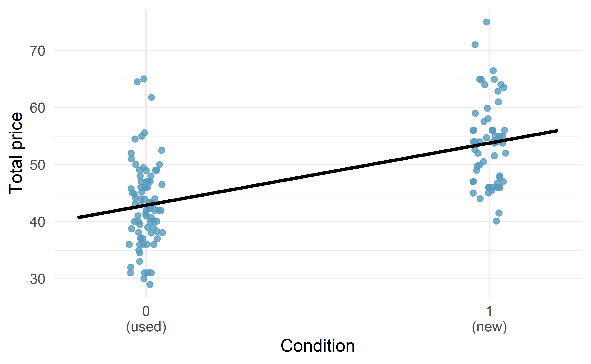
Figure 6.15: Total auction prices for the video game Mario Kart, divided into used (\(x = 0\)) and new (\(x = 1\)) condition games. The least squares regression line is also shown.
To incorporate the game condition variable into a regression equation, we must convert the categories into a numerical form.
We will do so using an indicator variable called condnew, which takes value 1 when the game is new and 0 when the game is used.
Using this indicator variable, the linear model may be written as
\[\widehat{price} = \beta_0 + \beta_1 \times condnew\]
The parameter estimates are given in Table 6.7.
| term | estimate | std.error | statistic | p.value |
|---|---|---|---|---|
| (Intercept) | 42.9 | 0.814 | 52.67 | 0 |
| condnew | 10.9 | 1.258 | 8.66 | 0 |
Using values from Table 6.7, the model equation can be summarized as
\[\widehat{price} = 42.871 + 10.90 \times condnew\]
Interpret the two parameters estimated in the model for the price of Mario Kart in eBay auctions.
The intercept is the estimated price when condnew takes value 0, i.e. when the game is in used condition.
That is, the average selling price of a used version of the game is $42.87.
The slope indicates that, on average, new games sell for about $10.90 more than used games.
Interpreting model estimates for categorical predictors.
The estimated intercept is the value of the response variable for the first category (i.e. the category corresponding to an indicator value of 0). The estimated slope is the average change in the response variable between the two categories.
We’ll elaborate further on this topic in Chapter 7, where we examine the influence of many predictor variables simultaneously using multiple regression.
6.3 Outliers in linear regression
In this section, we identify criteria for determining which outliers are important and influential. Outliers in regression are observations that fall far from the cloud of points. These points are especially important because they can have a strong influence on the least squares line.
6.3.1 Types of outliers
There are three plots shown in Figure 6.16 along with the least squares line and residual plots. For each scatterplot and residual plot pair, identify the outliers and note how they influence the least squares line. Recall that an outlier is any point that doesn’t appear to belong with the vast majority of the other points.
A: There is one outlier far from the other points, though it only appears to slightly influence the line.
B: There is one outlier on the right, though it is quite close to the least squares line, which suggests it wasn’t very influential.
C: There is one point far away from the cloud, and this outlier appears to pull the least squares line up on the right; examine how the line around the primary cloud doesn’t appear to fit very well.
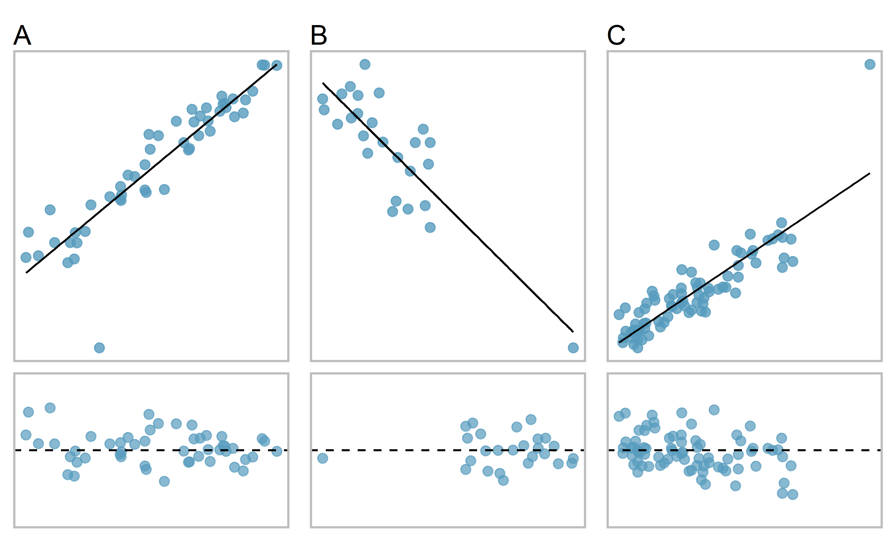
Figure 6.16: Three plots, each with a least squares line and residual plot. All data sets have at least one outlier.
There are three plots shown in Figure 6.17 along with the least squares line and residual plots. As you did in the previous exercise, for each scatterplot and residual plot pair, identify the outliers and note how they influence the least squares line. Recall that an outlier is any point that doesn’t appear to belong with the vast majority of the other points.
D: There is a primary cloud and then a small secondary cloud of four outliers. The secondary cloud appears to be influencing the line somewhat strongly, making the least square line fit poorly almost everywhere. There might be an interesting explanation for the dual clouds, which is something that could be investigated.
E: There is no obvious trend in the main cloud of points and the outlier on the right appears to largely control the slope of the least squares line.
F: There is one outlier far from the cloud. However, it falls quite close to the least squares line and does not appear to be very influential.
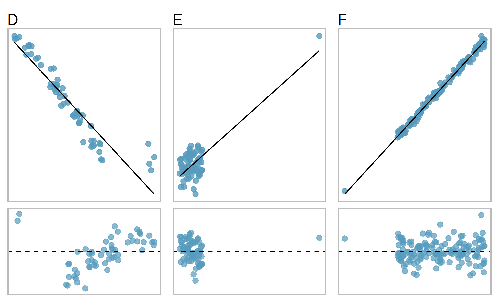
Figure 6.17: Three plots, each with a least squares line and residual plot. All data sets have at least one outlier.
Examine the residual plots in Figures 6.16 and 6.17. You will probably find that there is some trend in the main clouds of Plots C, D, and E. In these cases, the outliers influenced the slope of the least squares lines. In Plot E, data with no clear trend were assigned a line with a large trend simply due to one outlier (!).
Leverage.
Points that fall horizontally away from the center of the cloud tend to pull harder on the line, so we call them points with high leverage.
Points that fall horizontally far from the line are points of high leverage; these points can strongly influence the slope of the least squares line. If one of these high leverage points does appear to actually invoke its influence on the slope of the line – as in Plots C, D, and E of Figures 6.16 and 6.17 – then we call it an influential point.
Influential point.
A point is influential if, had we fitted the line without it, the influential point would have been unusually far from the least squares line. Influential points tend to pull the slope of the line up or down from what we would have seen had we fit the regression line without it.
It is tempting to remove outliers. Don’t do this without a very good reason. Models that ignore exceptional (and interesting) cases often perform poorly. For instance, if a financial firm ignored the largest market swings – the “outliers” – they would soon go bankrupt by making poorly thought-out investments.
6.4 Chapter review
Summary
Throughout this chapter, the nuances of a simple linear regression model have been described. You have learned how to create a regression model between two quantitative variables. The residuals in a linear model are an important metric used to understand how well a model fits; high leverage points, influential points, and other types of outliers can impact the fit of a model. Correlation is a measure of the strength and direction of the linear relationship of two variables, without specifying which variable is the explanatory and which is the outcome. Future chapters will focus on generalizing the linear model from the sample of data to claims about the population of interest.
Data visualization summary
Now that we have looked at how to summarize and visualize one or two variables of either type (categorical or quantitative), we can organize all these visualization methods into a single decision tree. Figure 6.18 presents a decision tree for deciding which type of plot is most appropriate for a given number and types of variables. In the next chapter, we’ll look at exploratory data analysis methods for more than two variables.
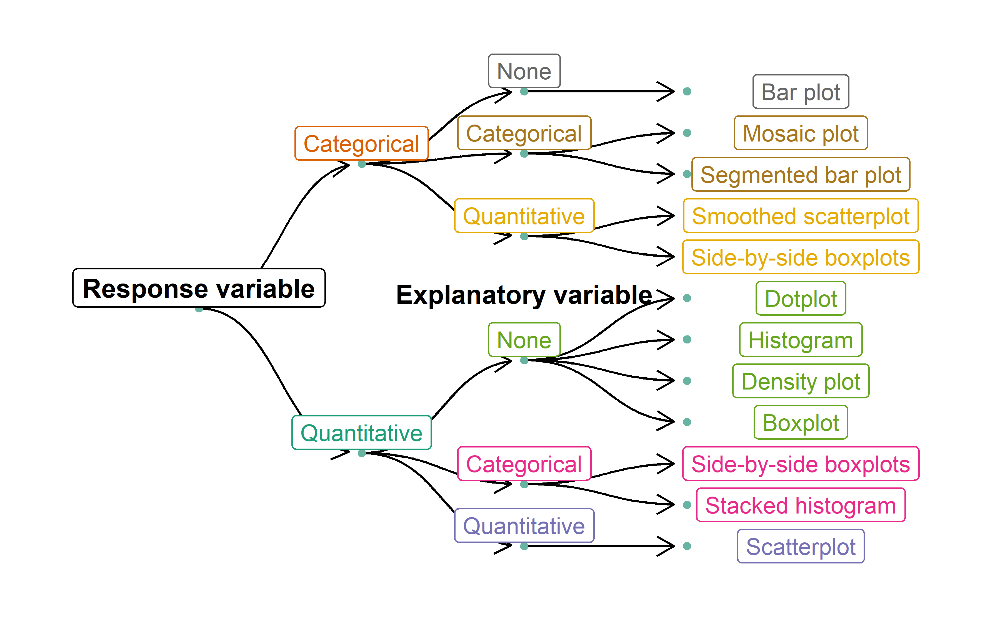
Figure 6.18: Decision tree for determining an appropriate plot given a number of variables and their types.
Summary measures
Though some of these summary measures will be covered in later chapters, Table 6.9 provides a comprehensive summary of these measures according to the type(s) of variable(s) which they summarize.
| Response Variable | Explanatory Variable | Summary Measure(s) |
|---|---|---|
| Binary | (None) | One proportion |
| Binary | Binary | Difference in proportions, relative risk |
| Quantitative | (None) | One mean |
| Quantitative | Binary (Paired) | Mean difference |
| Quantitative | Binary (Independent) | Difference in means |
| Quantitative | Quantitative | Correlation, r-squared, regression slope |
Notation summary
In the field of statistics, summary measures that summarize a sample of data are called statistics. Numbers that summarize an entire population are called parameters. You can remember this distinction by looking at the first letter of each term:
Statistics summarize Samples.
Parameters summarize Populations.
We typically use Roman letters to symbolize statistics (e.g., \(\bar{x}\), \(\hat{p}\)), and Greek letters to symbolize parameters (e.g., \(\mu\), \(\pi\)).
| Summary Measure | Statistic | Parameter |
|---|---|---|
| Sample size | \(n\) | \(-\) |
| Proportion | \(\hat{p}\) | \(\pi\) |
| Mean | \(\bar{x}\) | \(\mu\) |
| Correlation | \(r\) | \(\rho\) |
| Regression line slope | \(b_1\) | \(\beta_1\) |
| Regression line \(y\)-intercept | \(b_0\) | \(\beta_0\) |
Terms
We introduced the following terms in the chapter. If you’re not sure what some of these terms mean, we recommend you go back in the text and review their definitions. We are purposefully presenting them in alphabetical order, instead of in order of appearance, so they will be a little more challenging to locate. However you should be able to easily spot them as bolded text.
| coefficient of determination | influential point | residuals |
| correlation | least squares criterion | sum of squared error |
| extrapolation | least squares line | total sum of squares |
| high leverage | predictor | |
| indicator variable | r-squared |
Key ideas
Two variables are associated when the behavior of one variable depends on the value of the other variable. For two quantitative variables, this occurs when a trend is apparent on a scatterplot. If this trend is linear with a non-zero slope, we say the two quantitative variables are correlated. Recall again from Chapter 1, association does not imply causation!
A least squares regression line represents the predicted value of the response variable, \(y\), for a given \(x\)-value. Since the actual observed values of the response variable are denoted by \(y\), we denote the predicted values by \(\hat{y}\).
The slope of the regression line is the predicted (estimated mean) change in the response variable that is associated with a one-unit increase in \(x\).
The \(y\)-intercept of the regression line is the predicted (estimated mean) value of the response variable when \(x = 0\). If the collected data did not include \(x\)-values near zero, then this prediction is an example of extrapolation — using the regression line to make predictions outside the range of observed data.
A regression line only provides a predicted response value, which may or may not be close to the value we would actually observe. A numerical measure of this “prediction error” is the residual = (observed \(y\)-value) \(-\) (predicted \(\hat{y}\)-value); that is, the distance from the observed \(y\)-value to the regression line. Positive residuals indicate that the observed \(y\)-value is above the regression line (our regression model underestimated the response); negative residuals indicate that the observed \(y\)-value is below the regression line (our regression model overestimated the response).
The correlation coefficient (or just “correlation”) between two quantitative variables, denoted by \(r\) or \(R\), is a number between \(-1\) and \(1\) that measures the strength (by its magnitude) and direction (by its sign) of the linear relationship between the two variables. Correlation is only useful if the two quantitative variables are linearly associated.
The coefficient of determination, or r-squared is a number between \(0\) and \(1\) that measures the proportion of the variation in the response variable that can be explained by knowing the \(x\)-value. It can be computed by squaring the correlation coefficient (\(r^2\)), or by using sample variances: \[ r^2 = \frac{s^2_{y}-s^2_{RES}}{s^2_{y}}, \] where \(s^2_{y}\) is the sample variance of the observed \(y\)-values, and \(s^2_{RES}\) is the sample variance of the residuals.
An outlier is a point that does not follow the general pattern of the data. An influential point is an outlier that tends to pull the slope of the line (or correlation) up or down from what we would have seen had we fit a regression line without it. An observation with an \(x\)-value that is far away from the center of the observed \(x\)-values is said to have high leverage, and has the potential to be an influential point.
If a model underestimates an observation, then the model estimate is below the actual. The residual, which is the actual observation value minus the model estimate, must then be positive. The opposite is true when the model overestimates the observation: the residual is negative.↩︎
Green diamond: \(\hat{y} = 43+0.57x = 43+0.57\times 85.0 = 91.45 \rightarrow e = y - \hat{y} = 98.6-91.45=7.15\). This is close to the earlier estimate of 7. Yellow triangle: \(\hat{y} = 43+0.57x = 97.44 \rightarrow e = -3.44\). This is also close to the estimate of -4.↩︎
Formally, we can compute the correlation for observations \((x_1, y_1)\), \((x_2, y_2)\), ..., \((x_n, y_n)\) using the formula \[R = \frac{1}{n-1} \sum_{i=1}^{n} \frac{x_i-\bar{x}}{s_x}\frac{y_i-\bar{y}}{s_y}\] where \(\bar{x}\), \(\bar{y}\), \(s_x\), and \(s_y\) are the sample means and standard deviations for each variable.↩︎
We’ll leave it to you to draw the lines. In general, the lines you draw should be close to most points and reflect overall trends in the data.↩︎
Larger family incomes are associated with lower amounts of aid, so the correlation will be negative. Using a computer, the correlation can be computed: -0.499.↩︎
There are applications where the sum of residual magnitudes may be more useful, and there are plenty of other criteria we might consider. However, this book only applies the least squares criterion.↩︎
About \(r^2 = (-0.97)^2 = 0.94\) or 94% of the variation is explained by the linear model.↩︎
The difference \(SST - SSE\) is called the regression sum of squares, \(SSR\), and can also be calculated as \(SSR = (\hat{y}_1 - \bar{y})^2 + (\hat{y}_2 - \bar{y})^2 + \cdots + (\hat{y}_n - \bar{y})^2\). \(SSR\) represents the variation in \(y\) that was accounted for in our model.↩︎
\(SST\) can be calculated by finding the sample variance, \(s^2\) and multiplying by \(n-1\).↩︎